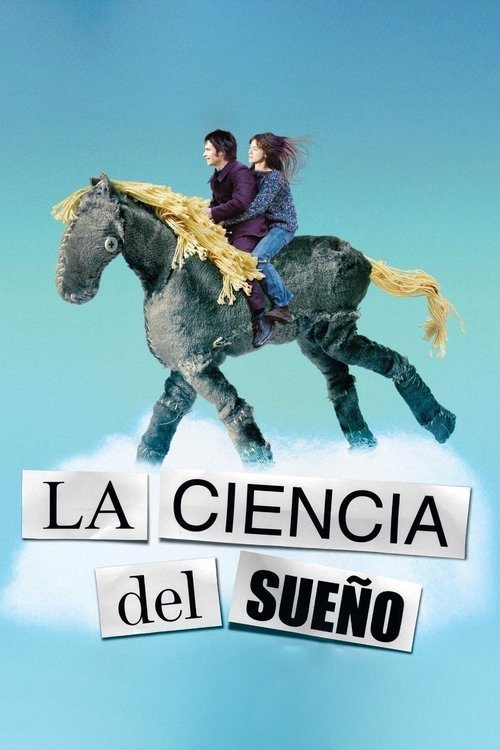

La ciencia del sueño (2006)
Sinopsis Rápida
¿Qué pasaría si tus sueños se volvieran indistinguibles de la realidad? Stephane, un joven solitario, se sumerge en un mundo onírico donde el amor y la locura se confunden.
Sinopsis Detallada
La ciencia del sueño es una exploración onírica y poética del amor, la pérdida y la fragilidad de la realidad. Stéphane, un joven con una imaginación desbordante, se enamora de Stéphanie, una mujer igualmente enigmática. A través de sueños vívidos y surrealistas, la línea entre fantasía y realidad se difumina, llevándolos a un viaje emocionalmente cargado. La película, dirigida por Michel Gondry, destaca por su estética visual innovadora y su narrativa no lineal, cautivando al espectador con sus imágenes oníricas y su banda sonora cautivadora. La película desafía la percepción de la realidad y la naturaleza del amor, dejando una profunda impresión.
¿Por qué tenés que verla?
- Una experiencia cinematográfica única e inolvidable que te hará cuestionar la naturaleza de la realidad.
- La dirección de Michel Gondry es innovadora y visualmente deslumbrante, creando un mundo onírico cautivador.
- La película ha influenciado a otros cineastas y artistas por su estilo visual distintivo y su exploración temática.
- La banda sonora, que crea una atmósfera misteriosa y evocadora, es esencial para la experiencia completa.
Idea Extra
Análisis del simbolismo en los sueños de Stéphane: un estudio visual de las imágenes recurrentes y su significado en la trama.